Milan, Italy — c. 1450
The Surviving Trionfi (Art attributed to Bonifacio Bembo)
Commissioned by the ruling family of Milan, the Visconti-Sforza deck is a masterpiece of Renaissance art. Hand-painted with real gold leaf stamps, these luxury cards do not feature titles or numbers. The surviving 20 cards are arranged below in an optimized 4-column matrix grid.
| Cards 00 - 03 | |||
|---|---|---|---|
|
00 — Il Matto (The Fool) 
|
01 — Il Bagatto (The Magician) 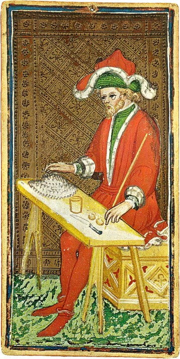 |
02 — La Papessa (The Popess) 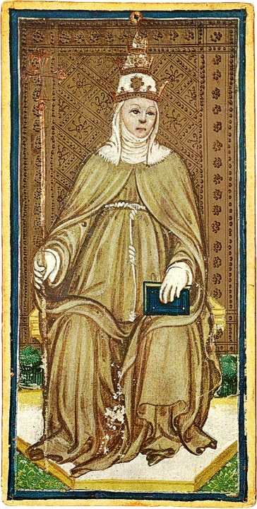 |
03 — L'Imperatrice (The Empress) 
|
| Cards 04 - 07 | |||
|
04 — L'Imperatore (The Emperor) 
|
05 — Il Papa (The Pope) 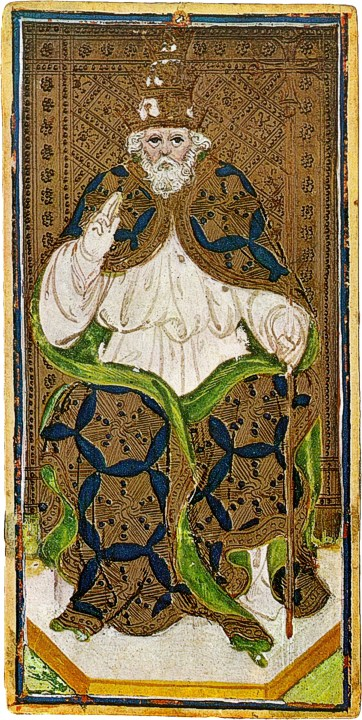 |
06 — L'Amore (The Lovers) 
|
07 — Il Carro (The Chariot) 
|
| Cards 08 - 11 | |||
|
08 — La Giustizia (Justice) 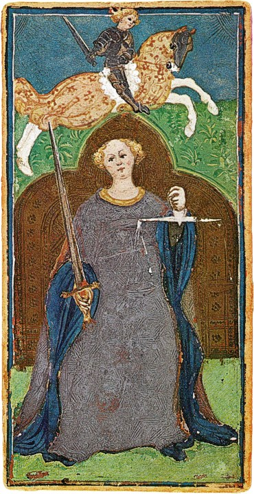 |
09 — Il Tempo (The Hermit) 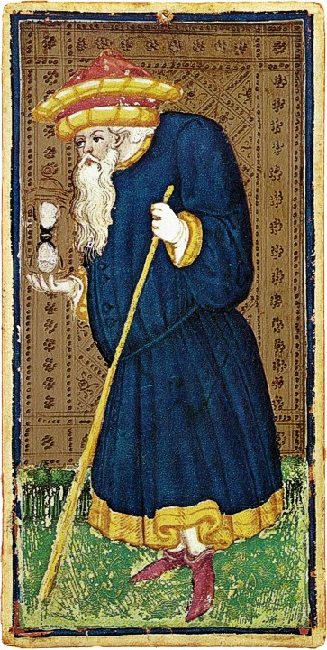 |
10 — Ruota di Fortuna 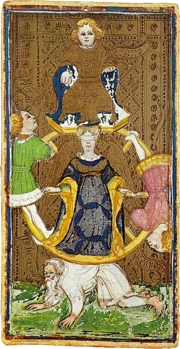 |
11 — La Fortezza (Fortitude) 
|
| Cards 12 - 14 & 17 | |||
|
12 — Il Traditore (The Hanged Man) 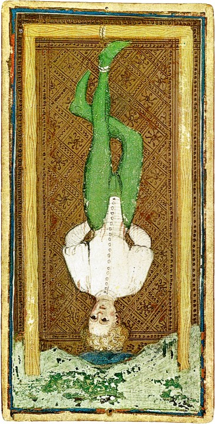 |
13 — La Morte (Death) 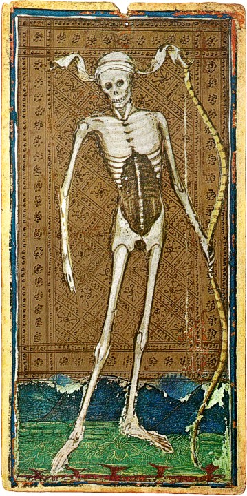 |
14 — La Temperanza (Temperance) 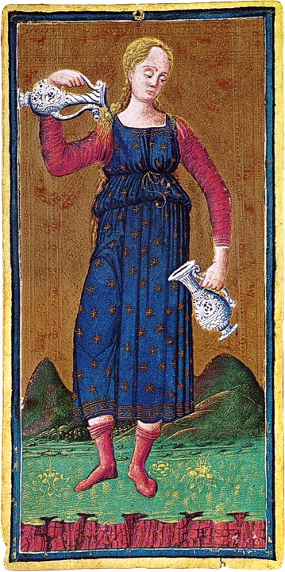 |
17 — La Stella (The Star) 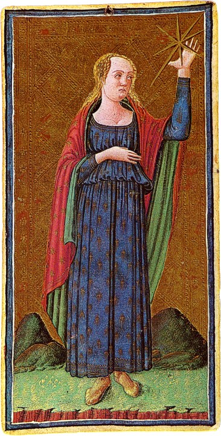 |
| Cards 18 - 21 | |||
|
18 — La Luna (The Moon) 
|
19 — Il Sole (The Sun) 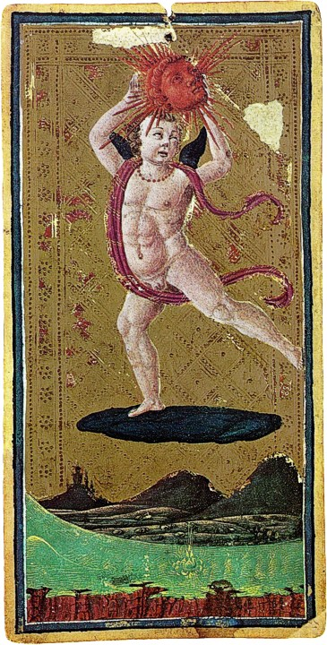 |
20 — Il Giudizio (Judgement) 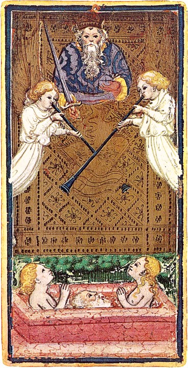 |
21 — Il Mondo (The World) 
|
Deck History
The blank slots in the historical timeline of the Visconti-Sforza deck are a direct reflection of its rich and fragmented material history. Unlike modern card productions, this mid-15th-century Milanese luxury item was hand-painted on thick, fragile card stock for aristocratic parlor play, leaving it uniquely vulnerable to wear and political upheaval over the centuries. When historians and collectors recovered the cards, two prominent trumps were found to be missing entirely: Card 15 (The Devil) and Card 16 (The Tower).
While it remains a subject of intense debate whether these cards were simply lost to time, destroyed during local political conflicts, or purposely excluded by court artists to shield the ruling Visconti and Sforza dynasties from dark, catastrophic motifs, their absence has become a defining characteristic of the deck's legacy.